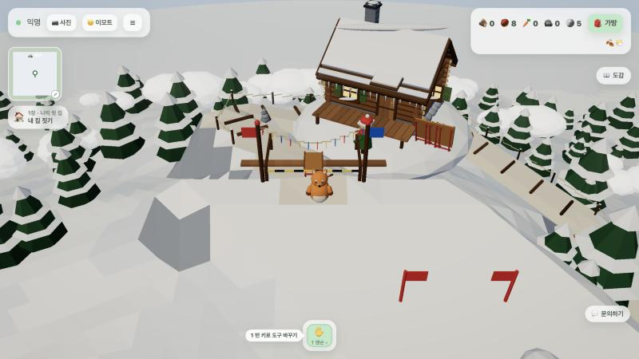
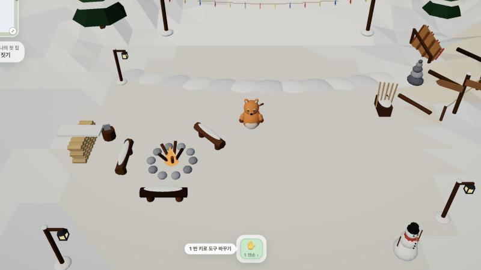
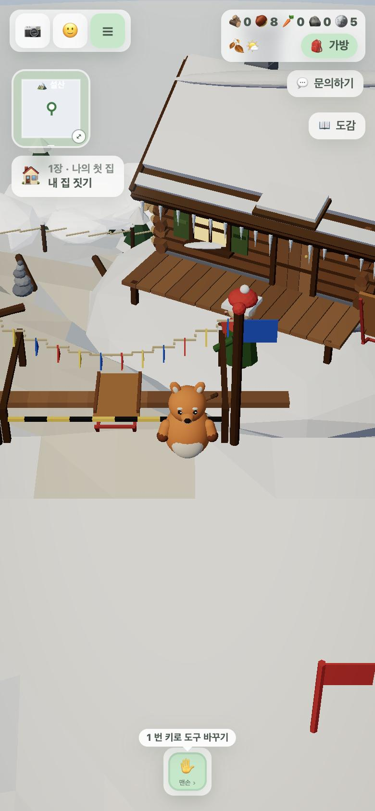
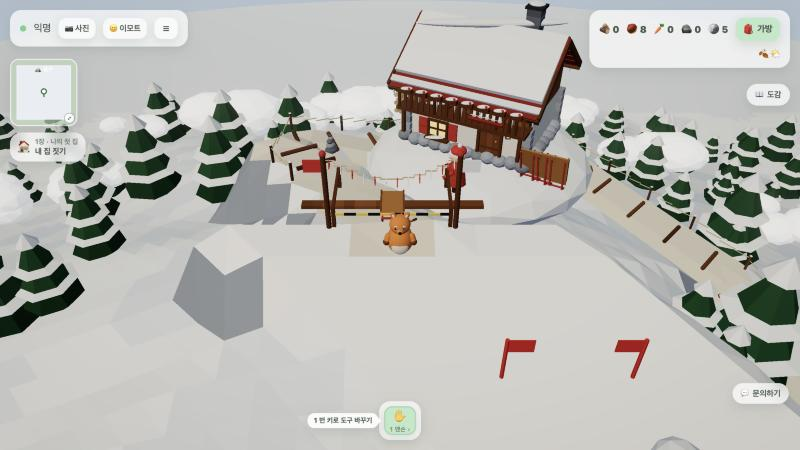
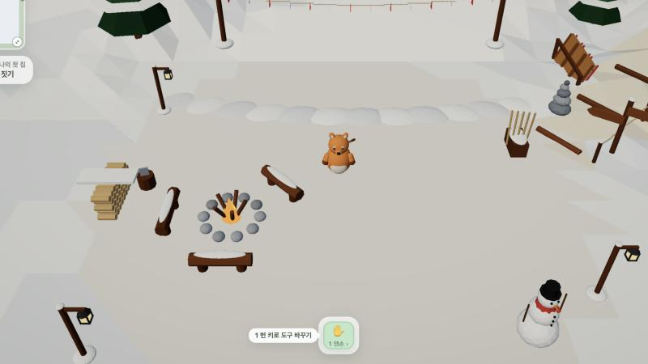
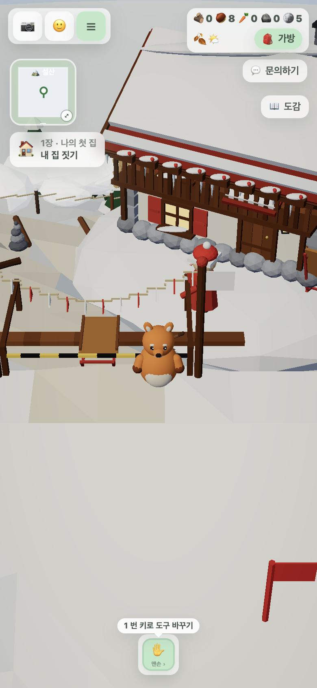
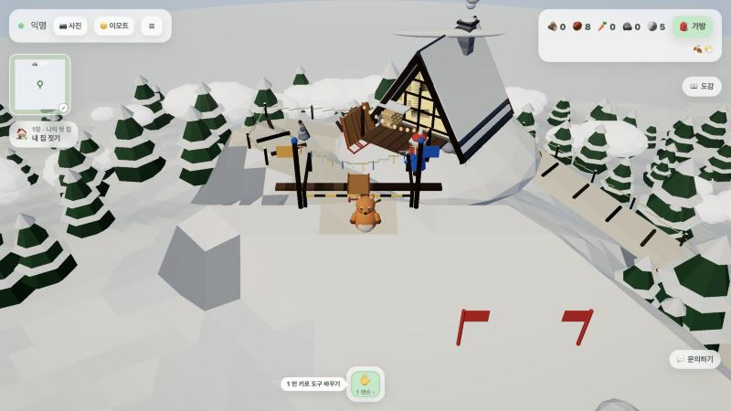
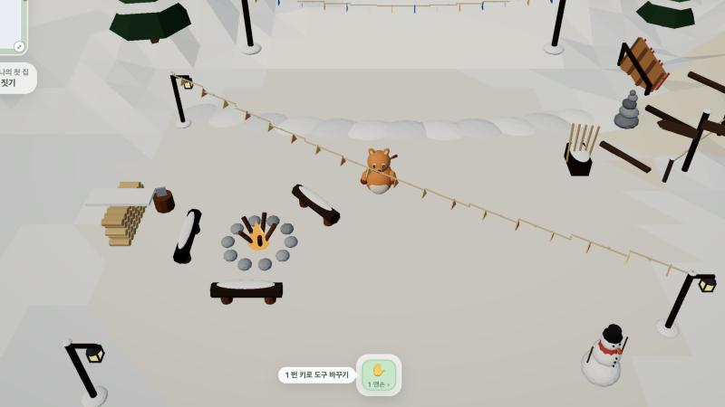
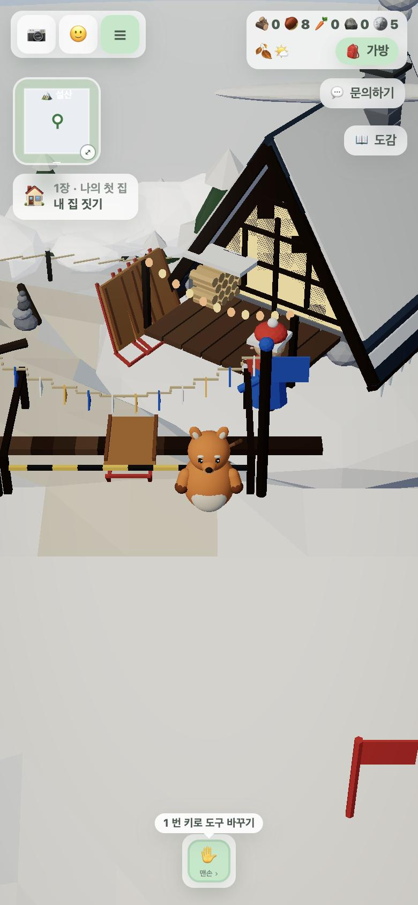

🏔️ 썰매지기의 산장: 정상 산장 · 광장 시안
세 안 모두 같은 서사(돌탑 길 → 정상 산장 → 출발대 → 결승 둔덕 → 반납대)이고, 산장 모양과 색이 다릅니다. 광장 소품은 공통이며 색만 테마를 따릅니다.
A 통나무 산장
통나무를 엇갈려 쌓은 벽, 지붕널, 고드름, 굴뚝 연기, 앞 데크. 마을의 나무 톤과 가장 잘 이어집니다.
정상 (PC)

광장 (PC)

정상 (모바일)

B 알프스 산장
아래층은 흰 벽과 돌 모서리, 위층은 나무 판자. 빨간 덧창과 꽃 상자가 달린 발코니. 레퍼런스(스위스 산 위 호텔)에 가장 가깝습니다.
정상 (PC)

광장 (PC)

정상 (모바일)

C 등불 산장
가파른 A자 지붕, 불 켜진 큰 유리 박공, 데크 위 전구 줄. 저녁·밤 테마에서 가장 돋보입니다.
정상 (PC)

광장 (PC)

정상 (모바일)
